SDG · Service design · Team project
Medical Care System for Elder Medical Trust
Building trust, before, during and after care.
A connected service proposal for older adults, families and healthcare staff—bringing guidance, clearer communication and continuing support into one medical journey.
Developed through the CREGU SDGs-ART remote training / internship program, the project looks beyond an isolated appointment to the relationships that make care understandable.
Team service concept · Interface studies and a 3D-printed wristband appearance model.
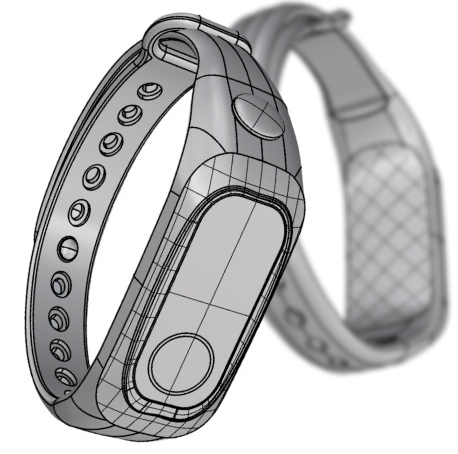
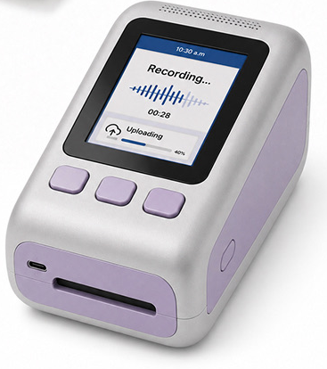
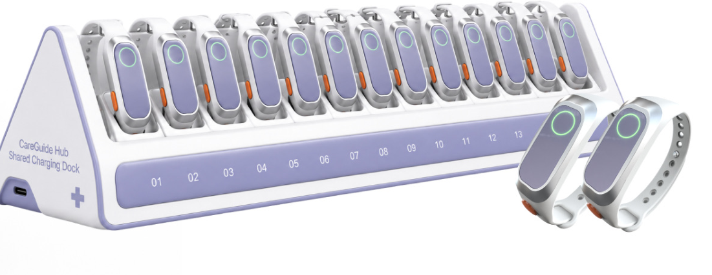
Our Vision & Background
Access to care also depends on whether people can understand, navigate and trust it.
The original research focused on older adults in East Asia, particularly the distance between increasingly digital services and the everyday experience of receiving care.
SDG 3 · Good Health & Well-being
Target 3.8 calls for universal health coverage. Our design extends this discussion to psychological accessibility: confidence in asking questions, understanding information and knowing what comes next.
Context · United Nations · SDG 3, Target 3.8. Psychological accessibility is the team’s design interpretation.
Information is difficult to interpret.
Medical terminology, digital interfaces and conflicting sources can make it hard to form a clear understanding of care.
The process is difficult to follow.
Registration, wayfinding, waiting and collection become a sequence of decisions across different spaces and systems.
Support is fragmented.
Families and staff bridge many gaps, yet communication often stops between appointments or after leaving the hospital.
Background sources credited in the original research board · United Nations; National Library of Medicine.
Secondary Research
Timeline of Attitude Changing
The research board explored changing relationships with healthcare institutions and health information. This timeline presents the team’s framing.
-
1945–1970
Relational & institutional trust
The team’s historical review considered how familiar social relationships and public institutions shaped expectations of care.
-
1980–2000
Markets, television & public experience
Changes in financing and media introduced questions about cost, expertise and the credibility of institutions.
-
2010
Many sources, one health question
Smartphones added social networks and informal advice to information received from professionals.
-
2016–2019
Online credibility
Search, short videos and health promotion raised questions about whose explanations people find convincing.
-
2022–2024
Digital access becomes part of care
The research examined how online appointments and digital procedures could introduce friction for older users.
-
2026
A new intermediary
AI became a theme in the interviews and concept exploration, prompting questions about interpretation, accountability and trust.
Medical Consultation Process
Inside the hospital, uncertainty can accumulate at each transition. Outside it, competing information and uneven support influence how a visit is understood.
-
Appointment & registration
Digital steps can be hard to complete independently.
-
Arrival & wayfinding
Finding a department adds decisions, movement and uncertainty.
-
Waiting & consultation
Long waits and limited consultation time affect the opportunity to ask questions.
-
Tests, payment & medicine
Patients need to understand the purpose of a step, its cost and where to go next.
-
Home care & follow-up
Instructions need to remain understandable after the conversation has ended.
Existing Solutions
The team compared four approaches, moving from individual interactions toward longer relationships. These comparisons informed design opportunities across the whole journey.
Medical Information Transparency
Make information easier to access, understand and interpret.
- Strengths
- Transparency · Accessibility · Participation
- Weaknesses
- Medical complexity · Low comprehension · One-way communication
Research references · Glass Health · Ada · MyChart · NHS App
Healthcare Companion & Communication
Support a person through guidance, reassurance and conversation.
- Strengths
- Emotional support · Communication · Reduced anxiety
- Weaknesses
- Resource demands · Short interactions · Limited scalability
Research references · Abridge · ElliQ · Pepper
Family & Community Support
Work with trusted relationships and support outside a consultation.
- Strengths
- Trusted relationships · Social support · Continuity
- Weaknesses
- Dependency · Reduced autonomy · Uneven support
Research references · PatientsLikeMe · CaringBridge · GrandPad
Continuous Health Management
Connect health records, monitoring and ongoing routines.
- Strengths
- Long-term monitoring · Preventive care · Personalized data
- Weaknesses
- Data emphasis · Limited emotional support · Weak trust-building
Research references · OMRON Connect · Fitbit · Medisafe · Apple Health
Comparison and product references · Team portfolio research board. The categories and qualitative assessments describe the team’s analysis.
Primary Research
Surveys, interviews and hospital observations provided complementary views of the same journey.
The research focused on three connected stakeholders: older adults, family members and healthcare professionals.
Information sharing needs
Accompany Frequency
- 57% Always
- 29% Never
- 14% Seldom
Survey figures · Reproduced from the team’s original research board.
Older Adults
-
Digital access · Age 71
Complex hospital processes and limited communication reduced confidence and contributed to delayed visits.
-
Information credibility · Age 78
Limited digital literacy affected which information sources felt understandable and convincing.
-
An AI intermediary · Age 82
One participant described relying on AI to interpret reports and answer health questions.
-
Physical access · Age 87
Mobility and hearing difficulties increased reliance on family, alongside concerns about diagnosis and overtreatment.
Medical Professionals
-
Endocrinology
Explaining evidence and reassuring patients compete with the time required by complex digital systems.
-
Inpatient nursing
Strict protocols, emotional needs and family communication can create competing demands.
-
Intensive care
Differences in beliefs and digital understanding can complicate explanations of medical decisions.
-
Emergency care
Triage, urgency and misunderstanding add communication work to an already pressured setting.
Interview summaries · Paraphrased from the older-adult and medical-professional accounts in the team portfolio.
Patient Journey Observation
Role Simulation
One researcher moved through the hospital process while another documented the experience. This helped the team locate moments of uncertainty and physical effort.
Point Shadow Follow
Follow-up observation at difficult points added a closer view of real service friction. Together, the team recorded 29 issues and identified 20 design opportunities.
-
Find a health issue
AnxiousSymptoms need to be understood before a visit.
Design opportunityHome health information and support.
-
Transportation
UneasyThe journey itself requires effort and coordination.
Design opportunityAge-friendly navigation and family assistance.
-
Registration
LostKiosks and unfamiliar digital steps make entry difficult.
Design opportunityGuided check-in and a familiar physical touchpoint.
-
Find a department
AnxiousSigns may show a destination without explaining the next action.
Design opportunityContextual directions at decision points.
-
Waiting
NervousPatients may not know whether their place or status has changed.
Design opportunityClear queue status and timely notifications.
-
Consultation
DiscouragedLimited time and terminology constrain communication.
Design opportunityStructured listening and understandable explanations.
-
Pharmacy
HelplessPayment, collection and instructions are separate tasks.
Design opportunityConnected pickup and a clear take-home record.
-
Resting
TiredBasic facilities can introduce further steps and barriers.
Design opportunityAccessible assistance and support close at hand.
-
Leave
ExhaustedA visit ends, while care needs and questions continue.
Design opportunityFollow-up, shared records and community contact.
Journey stages, emotional observations and research totals · Team portfolio, Patient Journey Observation.
Design Directions & Concept Exploration
Information Gap
Information is available, but may be difficult to absorb or interpret.
Process Gap
Systems designed for efficiency can be difficult to navigate.
Support Gap
Families coordinate care without a continuous shared view.
Emotional Gap
People need time, explanation and reassurance across the journey.
Trust Gap
The team’s synthesis: isolated touchpoints leave gaps between information, action and confidence.
Process Optimization
Guiding beacons, a companion wristband and a reorganized medical process.
Physical & Mental Experience
Physical support, portable tools and care that responds to uncertainty.
Connection Ties Through Different Roles
A communication terminal, shared diagnosis information and a continuing support network.
Individual proposals were compared through group voting. The selected direction combines service-process changes with physical and digital touchpoints, rather than relying on a single device.
Service Blueprint & Product Process Map
The visible experience and the support behind it need to remain connected.
The blueprint follows a visit from registration through discharge. It separates what a patient encounters, what staff or systems coordinate, and the supporting infrastructure.
-
5 min Registration
Front deskA guide fits and links a companion wristband.
BackendImport visit information and make it available to the clinician.
SupportAppointment system
-
8 min Go to consultation room
Front deskThe patient taps at a guidance beacon.
BackendConfirm the location and provide the next direction.
SupportBLE positioning
-
3 min Check-in
Front deskThe patient taps at the guidance desk.
BackendRead visit information and enter the queue.
SupportCheck-in system
-
15 min Waiting
Front deskLight and vibration indicate a queue update.
BackendManage the queue and communicate the call status.
SupportQueue call system
-
5 min Consultation
Front deskThe conversation is supported by a communication terminal and care card.
BackendOrganize notes and record the visit information.
SupportElectronic medical records
-
4 min Payment
Front deskA wristband tap supports the payment step.
BackendCalculate the amount and produce a voucher.
SupportPayment system
-
10 min Pick up medicine
Front deskGuidance leads to the pharmacy, where staff dispense the prescription.
BackendAccess the prescription and link collection to the visit.
SupportPrescription access
-
2 min Discharge
Front deskThe patient returns the wristband.
BackendUpload and synchronize relevant information for follow-up.
SupportShared records & return dock
Blueprint and scenario timings · Team portfolio. Timings describe the proposed service scenario.
Outside-Hospital
Older adult · Family · Community · Hospital
CareCircle connects records and support; CareCenter brings discussion and follow-up into community life. Feedback can continue between visits.
Inside-Hospital
Patient · Guidance staff · Clinician · Service desks
CareSenseBand links the visit, CareGuide explains the next action, and CareTransl supports the consultation and the take-home record.
Healthcare Service Platform · CareCircle
Three connected views for the older adult, their family and the clinical team.
Senior Care
A daily overview brings readings, reminders and visit preparation into a consistent entry point. Text size and voice settings respond to different access needs.
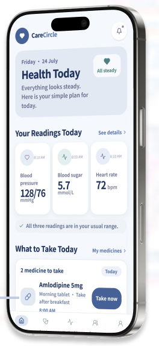
Family Care
A shared view supports updates, care coordination and a route to request help. The family interface is intended to keep relatives connected across the journey.
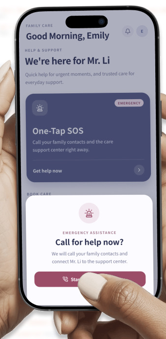
Patient / Clinical Care
The clinical view brings consultation context, records and family information together. The proposed assistance supports review; the design does not establish automated clinical decision-making.
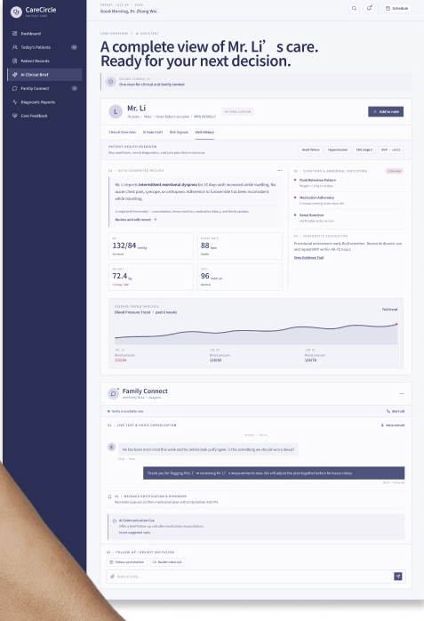
Senior Health App
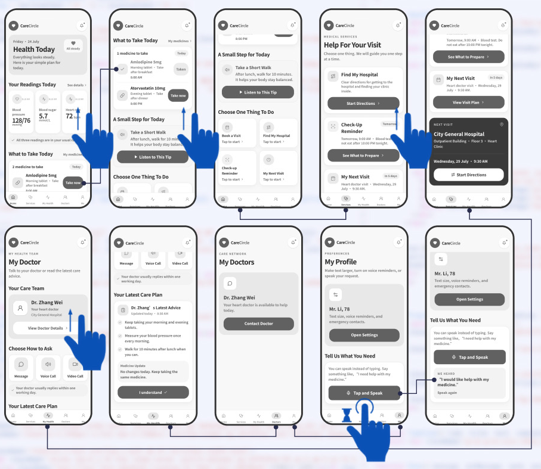
Family Progress Tracking App
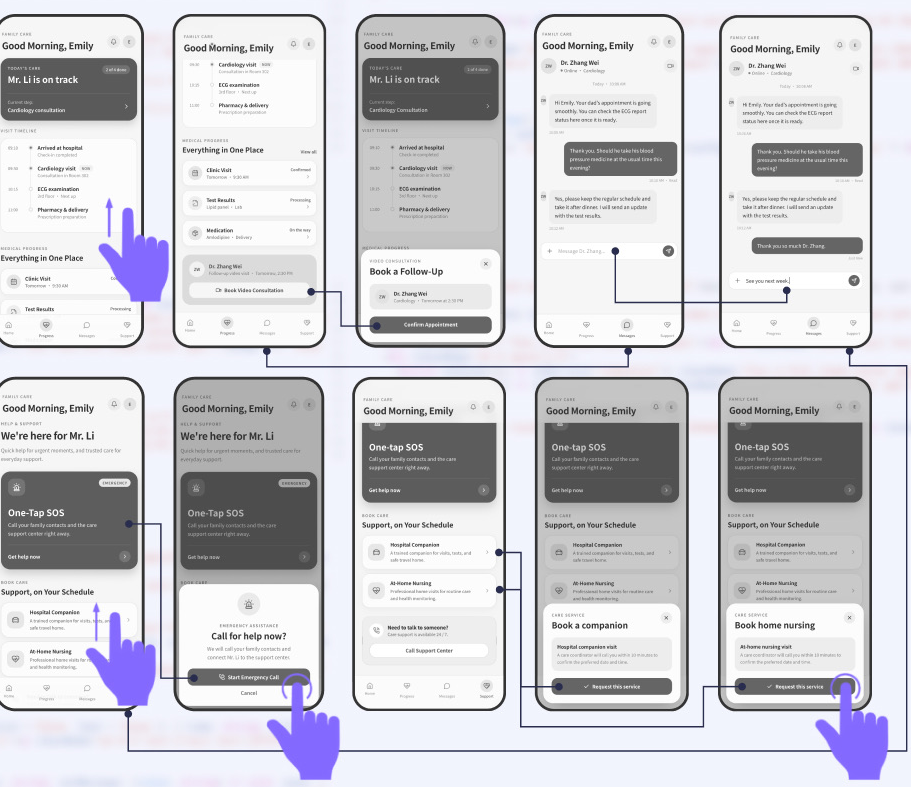
Screens and wireflows · Team portfolio, CareCircle. Measurements, medication entries and patient records shown are illustrative design content.
Hospital Companion Wristband · CareSenseBand
A familiar physical object to carry the visit from one step to the next.
The wristband concept links identity, guidance and notifications. It is collected with staff support and returned to a shared dock after the visit.
-
Identity & process verification
A proposed NFC interaction connects registration, examinations and collection.
-
Light-ring & vibration
Proposed feedback makes a queue update or navigation prompt noticeable.
-
Help within reach
A physical control provides a route to request assistance.
Exploded View
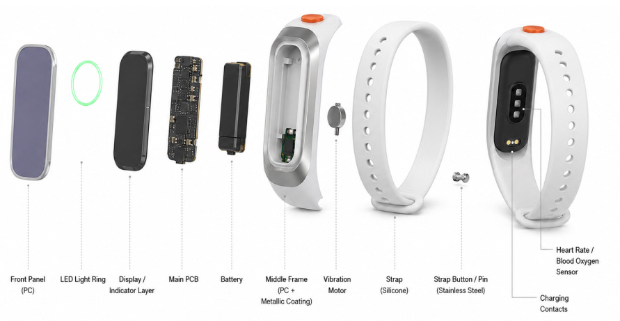
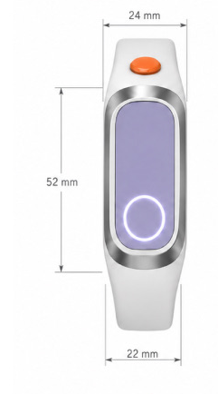
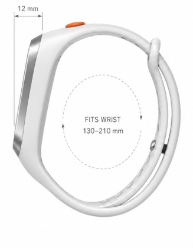
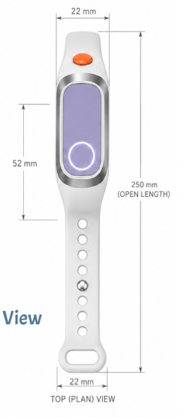
3D Printing Prototype
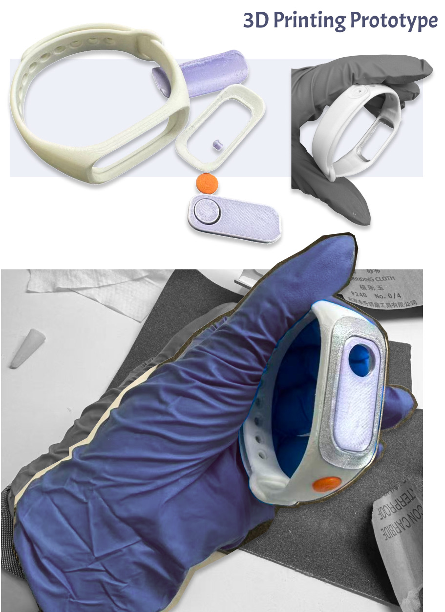
Collect & link
Staff verify the visit, link the temporary wristband and assist with fitting.
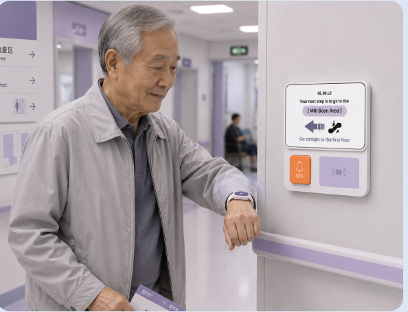
Move & receive feedback
The design links the wristband with guidance beacons and staff assistance.
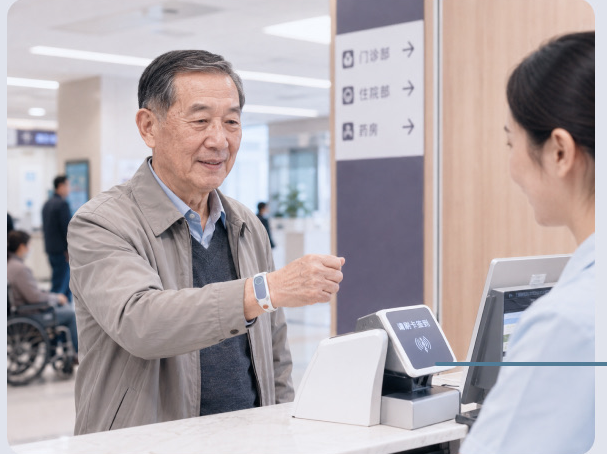
Tap & continue
A repeated tap interaction is proposed across check-in, tests and collection.
Product renderings, service scenarios and appearance-model photographs · Team portfolio, CareSenseBand. NFC, positioning and alerts remain proposed capabilities.
Beacon System · CareGuide
Make the next step clear at the moment a person needs it.
The concept places guidance and help at corridor junctions, waiting-zone thresholds and changes between floors. These transitional spaces were identified as places where uncertainty could build.
-
Tap to identify the next step
A wristband tap is proposed to bring up a visit-specific direction.
-
Read a clear instruction
The display pairs a destination, a simple direction and a visible physical control.
-
Ask for assistance
The SOS concept sends a request and location to staff, then shows an acknowledgement to the patient.
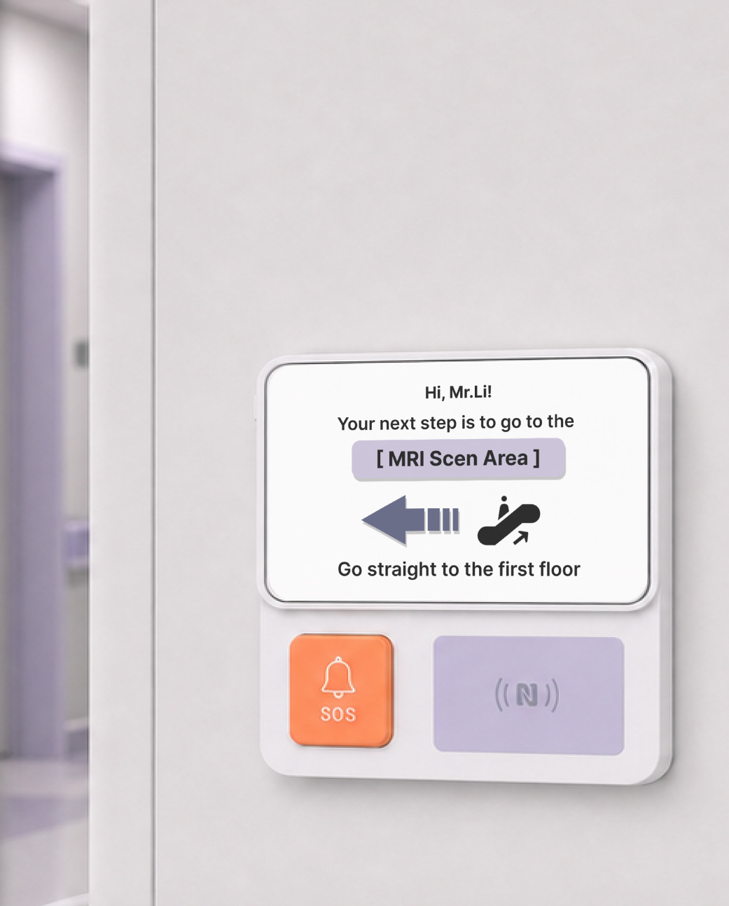
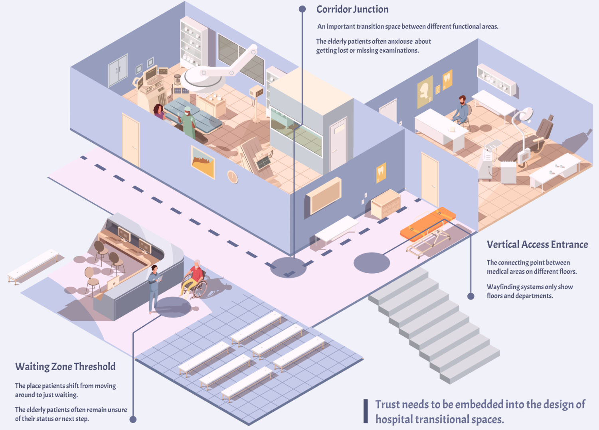
Acknowledge the request.
The patient should know that a request has been sent, while staff receive a clear location. The sequence below connects the guidance display, acknowledgement and staff response.
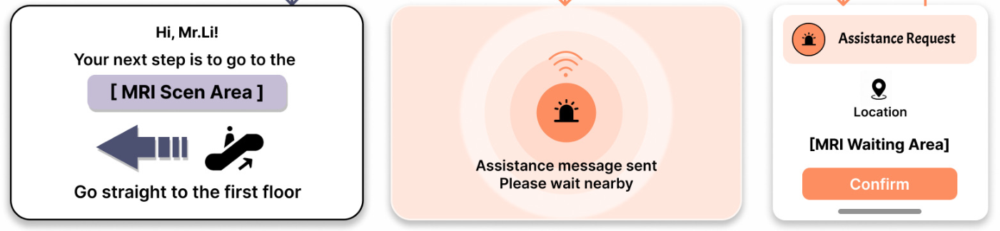
Spatial illustration, product rendering and interface states · Team portfolio, CareGuide.
Communication Terminal · CareTransl
A conversation should leave a record that remains understandable at home.
CareTransl is proposed as a portable communication terminal. An older person can speak naturally while the system helps organize information for professional review.
After the consultation, a printed care card provides a physical reference for agreed instructions and the next appointment.
- Speak instead of typing
- Organize the account for review
- Upload to the clinical workspace
- Print a take-home care card
Product Structure
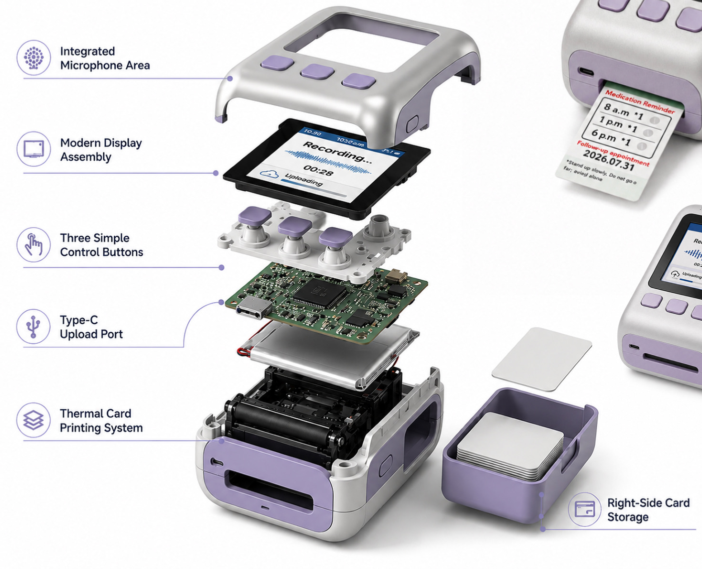
Care Cards
The proposed card brings reminders, follow-up timing and important notes into a portable format. Colour coding provides an additional visual distinction.
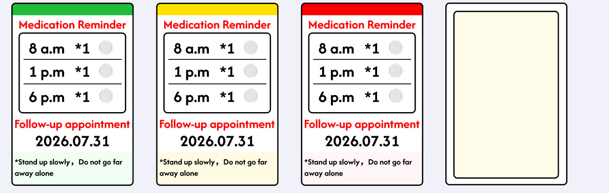
Clinical workspace
The interface study connects the spoken account with notes, a record and the card-printing step.
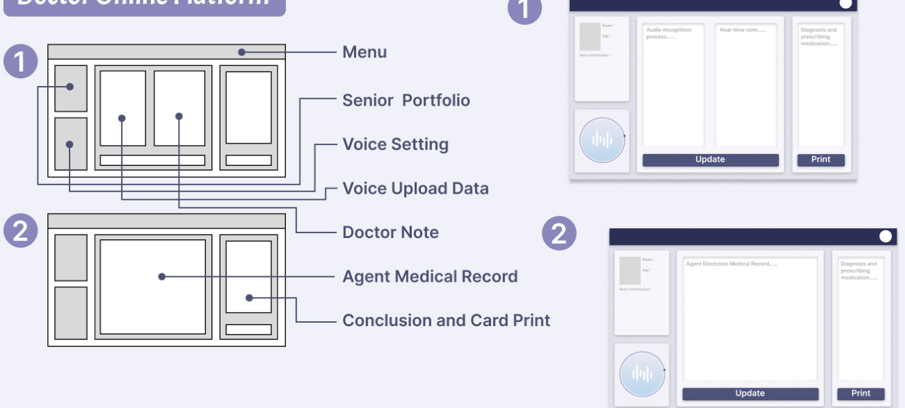
Product renderings, care cards and workspace studies · Team portfolio, CareTransl. Card contents are illustrative; capture, organization and printing are proposed functions.
Community Activity · CareCenter
Continue the conversation beyond the hospital.
CareCenter proposes a community setting for discussion, follow-up and familiar contact. It brings the service into residential life, where people can ask questions before uncertainty becomes a barrier to seeking care.
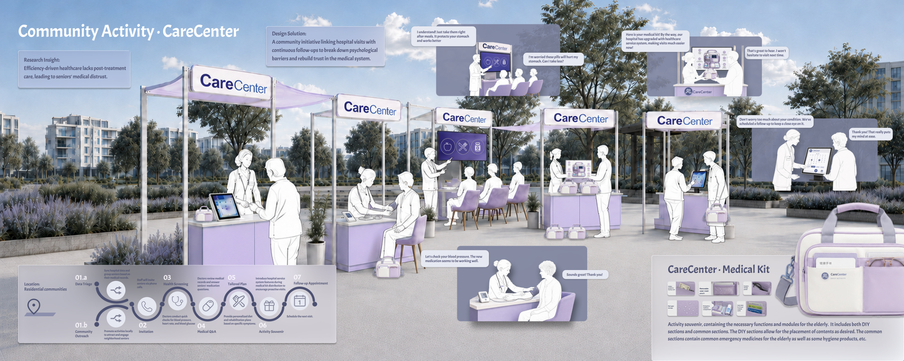
-
Data triage & outreach
Identify an entry point through community contact or an existing record.
-
Invitation
Encourage participation in a familiar residential setting.
-
Health screening
Provide a proposed opportunity for basic measurements and discussion.
-
Medical Q&A
Make room for questions and explanations.
-
Tailored plan
Connect the conversation with an understandable next step.
-
Activity souvenir
Offer a medical-kit concept with common and customizable storage.
-
Follow-up appointment
Maintain a route back to care after the activity.
CareCenter Medical Kit
The kit concept combines shared storage with customizable compartments. It makes a community activity tangible after a person leaves, connecting practical belongings with the wider service.
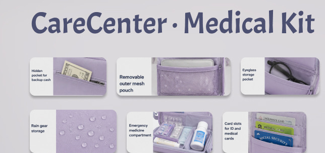
Community visualisation, service sequence and medical-kit details · Team portfolio, CareCenter.
Storyboard & Reflection
The final storyboard follows one connected journey, bringing the digital, physical and human touchpoints back together.
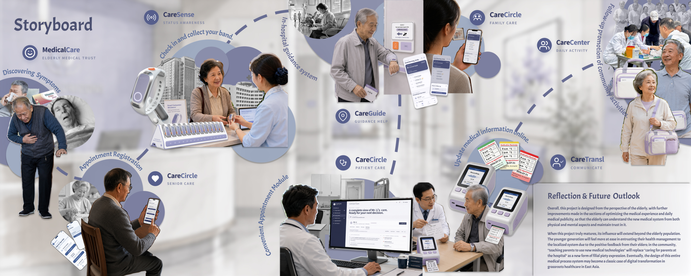
-
Registration & preparation
CareCircle brings a visit into an understandable plan.
-
Collect a companion
Staff help link the wristband to the visit.
-
Find the next step
CareGuide connects a physical place with a clear instruction.
-
Share the conversation
The clinical view and CareTransl support information exchange.
-
Continue in the community
CareCenter keeps questions and follow-up within reach.
Design the connections.
A device, an interface and a service desk can each solve a local problem. Their value also depends on whether the transition between them makes sense to the person receiving care.
Keep a physical route available.
Care cards, clear controls and staff assistance give the proposal ways to support people who cannot rely on a smartphone alone.
Next development
I would test the connected journey with older adults, families and staff, then refine readability, handovers, error recovery, consent and responsibility across the proposed modules.
- Project status
- Team service proposal, interface concepts and a 3D-printed wristband exterior. Connected-device functions and service outcomes remain to be developed and evaluated.
Original team credits · Project management and visual direction: Chuxuan Tian (Amethyst) and Minghui Xiang (Joyanna). Timeline coordination: Chuxuan Tian. Presentation: Yanjie Xu (Laura). All project imagery on this page is drawn from the supplied team portfolio.